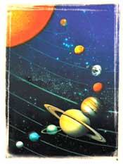

YÖRÜNGELER
Kuran'da
Güneþ ve Ay'dan bahsedilirken her birinin belli bir yörüngesi olduðu þöyle
vurgulanýr:
“Geceyi,
gündüzü, Güneþ'i ve Ay'ý yaratan O'dur;
her
biri bir yörüngede yüzüp gidiyor.„
(Enbiya
Suresi, 33)

Güneþ'in
sabit olmadýðý, belli bir yörüngede yol almakta olduðu, bir baþka ayette
de þöyle bildirilmektedir:
“Güneþ
de, kendisi için (tespit edilmiþ) olan bir karar yerine doðru akýp gitmektedir.
Bu üstün ve güçlü olan, bilenin takdiridir.„
(Yasin
Suresi, 38)
Kuran'da
bildirilen bu gerçekler, ancak çaðýmýzdaki astronomik gözlemlerle anlaþýlmýþtýr.
Astronomi uzmanlarýnýn hesaplarýna göre Güneþ, Solar Apex adý verilen bir
yörünge boyunca Vega Yýldýzý doðrultusunda saatte 720 bin km.'lik muazzam
bir hýzla hareket etmektedir. Bu, kabaca bir hesapla, Güneþ'in günde 17
milyon 280 bin km. yol katettiðini gösterir. Güneþ'le birlikte onun çekim
sistemi içindeki tüm gezegenler ve uydularý da ayný mesafeyi katederler.
Ayrýca, evrendeki tüm yýldýzlar
da buna benzer planlý bir harekete sahiptirler.
Tüm
evrenin bu þekilde yörüngelerle donatýlmýþ olduðu, yine Kuran'da þöyle
haber verilmiþtir:
“'Özen
içinde yollar ve yörüngelerle donatýlmýþ' göðe andolsun.„
(Zariyat
Suresi, 7)
Evrende
yaklaþýk 200 milyar galaksi mevcuttur ve her galakside ortalama 200 milyar
yýldýz bulunur. Bu yýldýzlarýn pek çoðunun gezegenleri, bu gezegenlerin
de uydularý vardýr. Tüm bu gök cisimleri çok ince hesaplarla saptanmýþ
yörüngelere sahiptir. Ve milyonlarca yýldýr her biri kendi yörüngesinde
diðerleriyle kusursuz bir uyum ve düzen içinde akýp gitmektedir. Bunlarýn
dýþýnda pek çok kuyruklu yýldýz da kendisi için tespit edilmiþ olan yörüngede
yüzüp gider.
Evrendeki
yörüngeler sadece gök cisimlerine ait deðildir. Galaksiler de þaþýrtýcý
hýzlarla planlý ve hesaplý yörüngeler üzerinde hareket ederler. Bu hareketleri
esnasýnda hiçbir gök cismi bir diðeriyle çarpýþmaz, yollarý kesiþmez.
Elbette,
Kuran'ýn indirildiði dönemde insanlýk, günümüzdeki gibi uzayý milyonlarca
kilometre uzaklara dek gözlemleyecek teleskoplara, geliþmiþ gözlem teknolojilerine,
modern fizik ve astronomi bilgilerine sahip deðildi. Dolayýsýyla uzayýn,
ayette bildirildiði gibi, "özen içinde yollar ve yörüngelerle donatýlmýþ"
olduðunu, o dönemde bilimsel olarak tespit edebilmek imkansýzdý. Ancak
o çaðda indirilmiþ olan Kuran-ý Kerim'de bu gerçek bizlere açýkça haber
verilmiþtir; çünkü Kuran, Allah'ýn sözüdür.
 |
Evrendeki pek çok kuyruklu yýldýz
gibi yukarýdaki resimde görülen Halley kuyruklu yýldýzý da planlý bir harekete
sahiptir. Kendisine ait belirli bir yörüngesi vardýr ve diðer gök cisimleriyle
birlikte kusursuz bir uyum ve düzen içinde bu yörüngede hareket etmektedir. |
|
Evrendeki tüm gök
cisimlerinin; gezegenlerin, bu gezegenlerin uydularýnýn, yýldýzlarýn, hatta
galaksilerin bile çok ince hesaplarla saptanmýþ yörüngeleri vardýr. Ýþte
bu kusursuz düzeni kuran ve devamlýlýðýný saðlayan, tüm evreni yaratmýþ
olan Allah'týr.
|
 |